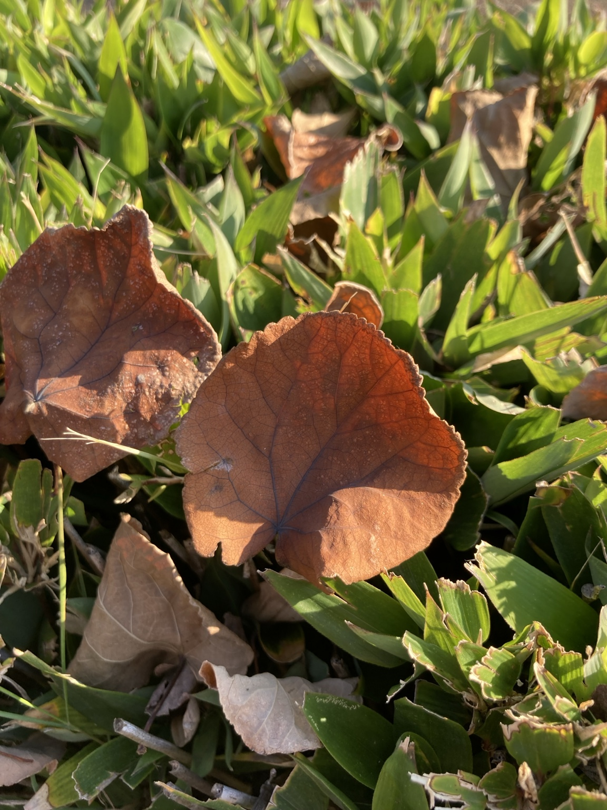
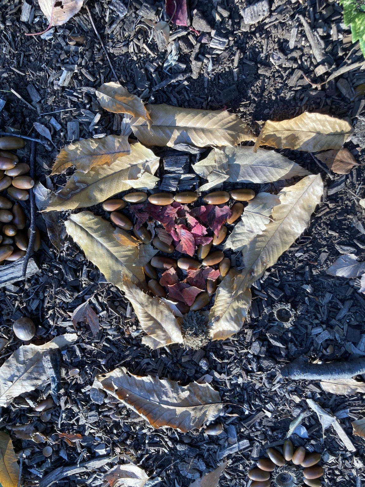

十月も終わりに近づき、庭や公園、通学路の落ち葉が増えてきました。毎朝の掃き掃除に追われると、落ち葉は片づける対象に見えてきます。けれども、少し視点を変えると、来年の土をつくる材料になります。
今日は、JA京都が紹介している落ち葉堆肥の作り方をもとに、その手順と、続けるための工夫を考えます。

集めるだけでなく、選ぶところから始まる
落ち葉は、木の種類によって分解の進み方が異なります。JA京都の解説では、ケヤキ・コナラ・クヌギなどの広葉樹の葉が向いているとされています。一方、この方法で不向きとされているのは、イチョウ・サクラ・クスなどの広葉樹や、スギ・ヒノキ・マツ・カヤなどの針葉樹の葉です。水分や樹脂が多くて腐りにくく、植物の発芽や生育を抑える物質を含む場合があるため、と説明されています。[1]
お住まいの場所に生えている木によっては、集められる落ち葉が限られるかもしれません。その場合は、無理に全部を使わず、向いている葉だけを選んで集めます。まず、庭や敷地にどんな木があるのかを、一緒に見て回るところから始められます。公園や他の人の敷地で集める場合は、管理者に確認しましょう。
積み重ねる手順
同じ解説にある手順を、ごく簡単にまとめます。
- 壁やベニヤ板を利用して安定した囲いをつくり、落ち葉を20cm程度の厚さに積みます。
- 米ぬかや油粕などを、落ち葉の重さの1〜2％ほどサンドイッチ状に重ねます。
- 踏むと水がしみ出す程度に水をまき、踏み固めます。
- これを繰り返して1mほどの高さにし、雨よけのブルーシートをかけます。
- その後、1か月ごとに3〜4回、積んだ落ち葉を切り返します。切り返しは、外側と内側を入れ替えるように混ぜ直す作業です。
- 落ち葉がボロボロに崩れてきたら完成で、目安は1年程度とされています。[1]
これはJA京都が紹介する一つの方法です。気温や雨の量、材料や管理の仕方によって進み方は変わります。お住まいの地域のJAや自治体の情報も、あわせて確認してください。
完成まで1年という時間
完成までの目安が1年というのは、長く感じます。ただ、それは悪いことばかりではありません。積む、水をまく、覆う、切り返すと、途中に小さな仕事がいくつもあります。月に一度の切り返しで、前回との違いを見比べることもできます。
参加する人にとって、結果が出るまでの見通しを共有できる作業は、取り組みやすいのではないかと考えます。これはこの手順から私が考えたことで、効果が確かめられているわけではありません。

安全に続けるための準備
落ち葉の堆肥づくりは、手順がわかりやすい分、体を使う場面が多くなります。水を含んだ落ち葉は重くなるので、少量ずつ運び、切り返しのときの腰の負担にも注意します。
高さ1mは紹介されている方法の目安です。高さを優先して脚立に上ったり、不安定な堆積物に乗ったりせず、地面から無理なく届く高さと作業方法を選びましょう。足元の滑りや囲いのぐらつきにも気を配ります。
手袋を使い、無理な姿勢で長く続けず、休憩を入れてください。乾いた落ち葉や米ぬかの粉じんを吸い込まないようにし、必要に応じてマスクを使い、作業後は手を洗いましょう。ほこりやカビで体調に影響が出やすい方は、扱う作業への参加方法を事前に相談してください。
そのうえで、仕事を分けて考えます。次は、説明のための仮の場面です。
あるグループで、落ち葉堆肥づくりを計画したとします。落ち葉を集める人、囲いに入れる人、水をまく人、記録をつける人。全員が同じ作業をする必要はありません。力仕事が難しい人は、日付を書いた札を用意したり、写真で変化を記録したりする役も選べます。大切なのは、役割を押しつけず、本人が選べるようにすることです。
結びに
落ち葉の堆肥づくりは、すぐに結果が出る作業ではありません。それでも、集める日、切り返しの日、できあがった堆肥を土に混ぜる日と、季節ごとに節目があります。

まずは、足元の落ち葉がどんな木のものかを確かめてみてください。その一歩が、来年の畑や花壇の土につながります。
参考資料
- JA京都 「落ち葉堆肥の作り方」（いきいき菜園生活、2015年11月、Vol.164）
参考資料は2026年10月26日に確認しました。写真3点は落ち葉の風景で、堆肥づくりの工程や完成品を撮影したものではありません。